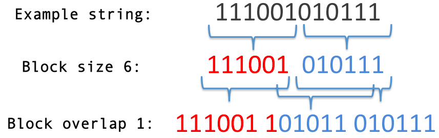

Overview
This introductory video provides a brief overview of how both the Block Decomposition Method and the Coding Theorem Method work as universal measures of complexity.
The Online Algorithmic Complexity Calculator (OACC) is an online tool developed by the Algorithmic Nature Group to provide reliable estimations to functions of complexity that are ultimately semi-computable, but represent true and universal measures of randomness (unlike statistical or entropic measurement approaches). This is done through various numerical methods based upon the mathematical theory of algorithmic probability and algorithmic randomness. The estimations have a wide range of applications in a very wide range of disciplines and they have been used in molecular biology, bioinformatics, psychometrics, economics, and graph theory (for a list of examples, see Publications).
The OACC retrieves numerical approximations (upper bounds) of Algorithmic (Kolmogorov-Chaitin) Complexity (AC) for short strings ($\textit{CTM}$), any length ($\textit{BDM}_{1D}$), and binary matrices ($\textit{BDM}_{2D}$), which can represent the adjacency matrices of unweighted graphs. These techniques are not only an alternative to the widespread use of lossless compression algorithms to approximate AC, but true approaches to AC. Lossless compression algorithms (e.g. BZIP2, GZIP, LZ) that are based upon entropy rate are not more related to AC than Shannon Entropy itself, which is unable to compress anything but statistical regularities.
Choosing evaluation parameters for the Block Decomposition Method
If the string that you want to evaluate has length shorter than $13$, you should use the Coding Theorem Method ($\textit{CTM}$) to estimate its algorithmic complexity. If the string is longer than $12$, then its algorithmic complexity can be numerically estimated with the Block Decomposition Method ($\textit{BDM}$), which requires specifying block size and block overlap values.
The following is a $BDM$ partitioning example for block size $= 6$ and block overlap $= 1$ :

In the formula $$\textit{BDM} = \sum_{i}^{n} \textit{CTM}(\textit{block}_i) + \log_{2}(|\textit{block}_i|),$$ $\textit{CTM}(\textit{block}_i)$ denotes the approximated algorithmic complexity of the pattern in the block of symbols, and $|\textit{block}_i|$ denotes the number of occurrences (multiplicity) of the block.
For $\textit{BDM}$, optimal parameters are usually the largest possible block size ($= 12$) with no overlaping ($= 0$). You should always pick the largest available block size, as it provides better approximations to algorithmic complexity. In contrast, the smallest block size ($=1$) approximates Shannon Entropy. You can pick any overlapping value that is shorter than your block size. For example, say your string is $111001010111$ and you use block size $=6$. If the overlapping is $0$, then $\textit{BDM}$ will look up the known $\textit{CTM}$ values of $111001$ and $010111$ and add them up, outputting $29.9515$ bits. Alternatively, you can choose block overlap $=1$, for which the strings whose $\textit{CTM}$ values are added are $111001$, $101011$, and $010111$. This second evaluation will output $32.9672$ bits.
Overlapping helps to deal with leftovers of the block partitioning if the string length is not a multiple of the block size, otherwise, leftovers with length less than the block size will be discarded and won't be considered in the complexity estimation. This paper shows different schemes to deal with boundary conditions. The online calculator only deals with the most 'basic' of these schemes, but we have proven that the error is bounded, and thus the output values are reliable for most comparative purposes. In general, overlapping blocks produce overestimations of complexity, and non-overlapping blocks lead to an underestimation only for objects with dimensions that are not a multiple of the block size.
You should always compare results with the same chosen parameters, never otherwise (unless you estimate the error as we did in the paper and then make corrections or take the deviations into consideration).
As for matrices, the same rule holds. Current support for strings is binary and non-binary, but for arrays it's currently only binary. With some loss of precision, one can always translate any alphabet into binary with some loss of information due to the extra granularity introduced in the translation.
Calculating the algorithmic probability
For more technical details you should read the Bibliography section below. But in a nutshell, we calculate a function $D(n,m)(s)$, which gives the algorithmic probability that halting machines in the set of all Turing machines with $n$ states and $m$ symbols denoted by $(n,m)$, produce a string $s$. We use the standard model of Turing machine that was used by Tibor Rado to define the Busy Beaver problem, but we have also proven that radical changes to the model produce similar estimations.
Formally, $$D(n, m)(s)=\frac{|\{T\in(n, m) : T(p) = s,\ b\in\{0,1,\cdots,m-1\}\}|}{|\{(T,b)\in(n, m)\times \{0,1,\cdots,m-1\} : T(b) \textit{ halts }\}|},$$ where $T(b)$ represents the output of Turing machine $T$ when running on a blank tape filled with symbol $b$ that produces $s$ upon halting, and $|A|$ represents the cardinality of the set $A$.
For $(n,2)$ with $ n < 5 $, the known Busy Beaver values give the maximum number of steps that a machine can run upon halting. But for $n \geq 5$ or for $(n,m)$ with $m > 2$, no Busy Beaver values are known, and the size of the machine spaces make impossible a complete exploration to calculate $D(n,m)$ for arbitrary $n$ and $m$, but an educated choice of timeouts can be made and samples produced (see the Bibliography section below).
Approximating algorithmic complexity
The function $D(n,m)$ is an approximation to Levin's Universal Distribution $\mathfrak{m}(s)$, and it can be used to approximate $K(s)$, the algorithmic complexity of string $s$ by using the Coding Theorem, $$K(s) \simeq -\log_2 \mathfrak{m}(s)$$
The greater value of $n$ we use to calculate $D(n,m)$, the better approximations we make to $K(s)$ for $s$ a string of an alphabet of $m$ symbols. Due to the uncomputability of $D(n,m)$ we work with samples and runtime cutoffs. For the simulation of Turing machines we use a C++ simulator running on a supercomputer of medium size.
Bibliography
Delahaye J.-P. and Zenil, H. (2012) Numerical Evaluation of the Complexity of Short Strings: A Glance Into the Innermost Structure of Algorithmic Randomness. Applied Mathematics and Computation 219, pp. 63-77. BibTex entry
Soler-Toscano F., Zenil H., Delahaye J.-P. and Gauvrit N. (2014) Calculating Kolmogorov Complexity from the Output Frequency Distributions of Small Turing Machines. PLoS ONE 9(5): e96223. BibTex entry
Zenil H., Soler-Toscano F., Dingle K. and Louis A. (2014) Correlation of Automorphism Group Size and Topological Properties with Program-size Complexity Evaluations of Graphs and Complex Networks, Physica A: Statistical Mechanics and its Applications, vol. 404, pp. 341–358, 2014. BibTex entry
Zenil H., Soler-Toscano F., Kiani N.A., Hernández-Orozco S., Rueda-Toicen A. (2016) A Decomposition Method for Global Evaluation of Shannon Entropy and Local Estimations of Algorithmic Complexity, arXiv:1609.00110 BibTex entry
See the Publications section for even more details and applications to other areas and connections to other measures.
Content on this site is licensed under a |
Contact info: hector.zenil at algorithmicnaturelag dot orgIf you use results from the OACC in a publication, please visit How to Cite. |